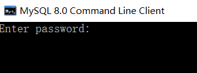

<!DOCTYPE html>
<html>
<head><meta name="generator" content="Hexo 3.9.0">
  <meta charset="utf-8">
  

  
  <title>navicat连接mysql问题 | Sunbearls`s Blog</title>
  <meta name="viewport" content="width=device-width, initial-scale=1, maximum-scale=1">
  <meta name="description" content="1.问题原因在使用navicat premium 12时出现不能连接mysql 8.0版本的情况，这是由于mysql版本升级之后的加密规则不一样导致，在mysql8.0版本之前的加密规则是mysql_natice_password,mysql8.0之后，加密规则是caching_sha2_password. 2.解决方案首先进入mysql的command line client,需要输入密码，默认">
<meta name="keywords" content="navicat">
<meta property="og:type" content="article">
<meta property="og:title" content="navicat连接mysql问题">
<meta property="og:url" content="http://yoursite.com/2020/02/06/navicat连接mysql问题/index.html">
<meta property="og:site_name" content="Sunbearls`s Blog">
<meta property="og:description" content="1.问题原因在使用navicat premium 12时出现不能连接mysql 8.0版本的情况，这是由于mysql版本升级之后的加密规则不一样导致，在mysql8.0版本之前的加密规则是mysql_natice_password,mysql8.0之后，加密规则是caching_sha2_password. 2.解决方案首先进入mysql的command line client,需要输入密码，默认">
<meta property="og:locale" content="en">
<meta property="og:image" content="http://yoursite.com/2020/02/06/navicat连接mysql问题/1.jpg">
<meta property="og:updated_time" content="2020-02-06T08:15:50.942Z">
<meta name="twitter:card" content="summary">
<meta name="twitter:title" content="navicat连接mysql问题">
<meta name="twitter:description" content="1.问题原因在使用navicat premium 12时出现不能连接mysql 8.0版本的情况，这是由于mysql版本升级之后的加密规则不一样导致，在mysql8.0版本之前的加密规则是mysql_natice_password,mysql8.0之后，加密规则是caching_sha2_password. 2.解决方案首先进入mysql的command line client,需要输入密码，默认">
<meta name="twitter:image" content="http://yoursite.com/2020/02/06/navicat连接mysql问题/1.jpg">
  
    <link rel="alternate" href="/atom.xml" title="Sunbearls`s Blog" type="application/atom+xml">
  
  
    <link rel="icon" href="/favicon.png">
  
  
    <link href="//fonts.googleapis.com/css?family=Source+Code+Pro" rel="stylesheet" type="text/css">
  
  <link rel="stylesheet" href="/css/style.css">
</head>
</html>
<body>
  <div id="container">
    <div id="wrap">
      <header id="header">
  <div id="banner"></div>
  <div id="header-outer" class="outer">
    <div id="header-title" class="inner">
      <h1 id="logo-wrap">
        <a href="/" id="logo">Sunbearls`s Blog</a>
      </h1>
      
    </div>
    <div id="header-inner" class="inner">
      <nav id="main-nav">
        <a id="main-nav-toggle" class="nav-icon"></a>
        
          <a class="main-nav-link" href="/">Home</a>
        
          <a class="main-nav-link" href="/archives">Archives</a>
        
          <a class="main-nav-link" href="/about">about</a>
        
      </nav>
      <nav id="sub-nav">
        
          <a id="nav-rss-link" class="nav-icon" href="/atom.xml" title="RSS Feed"></a>
        
        <a id="nav-search-btn" class="nav-icon" title="Search"></a>
      </nav>
      <div id="search-form-wrap">
        <form action="//google.com/search" method="get" accept-charset="UTF-8" class="search-form"><input type="search" name="q" class="search-form-input" placeholder="Search"><button type="submit" class="search-form-submit">&#xF002;</button><input type="hidden" name="sitesearch" value="http://yoursite.com"></form>
      </div>
    </div>
  </div>
</header>
      <div class="outer">
        <section id="main"><article id="post-navicat连接mysql问题" class="article article-type-post" itemscope itemprop="blogPost">
  <div class="article-meta">
    <a href="/2020/02/06/navicat连接mysql问题/" class="article-date">
  <time datetime="2020-02-06T07:46:25.000Z" itemprop="datePublished">2020-02-06</time>
</a>
    
  <div class="article-category">
    <a class="article-category-link" href="/categories/工具使用/">工具使用</a>
  </div>

  </div>
  <div class="article-inner">
    
    
      <header class="article-header">
        
  
    <h1 class="article-title" itemprop="name">
      navicat连接mysql问题
    </h1>
  

      </header>
    
    <div class="article-entry" itemprop="articleBody">
      
        
        <h3 id="1-问题原因"><a href="#1-问题原因" class="headerlink" title="1.问题原因"></a>1.问题原因</h3><p>在使用navicat premium 12时出现不能连接mysql 8.0版本的情况，这是由于mysql版本升级之后的加密规则不一样导致，在mysql8.0版本之前的加密规则是mysql_natice_password,mysql8.0之后，加密规则是caching_sha2_password.</p>
<h3 id="2-解决方案"><a href="#2-解决方案" class="headerlink" title="2.解决方案"></a>2.解决方案</h3><p>首先进入mysql的command line client,需要输入密码，默认用户名是root，如果更改过的需要如下图所示：</p>
<a id="more"></a>
<p><br>进入之后逐行输入以下代码即可：</p>
<figure class="highlight bash"><table><tr><td class="gutter"><pre><span class="line">1</span><br><span class="line">2</span><br><span class="line">3</span><br><span class="line">4</span><br></pre></td><td class="code"><pre><span class="line">mysql&gt; use mysql;</span><br><span class="line">mysql&gt; select user,plugin from user <span class="built_in">where</span> user =<span class="string">'root'</span>;  //此行语句是查询默认加密规则，当你执行下面的语句之后在执行此语句会发现加密规则已经改变</span><br><span class="line">mysql&gt; ALTER USER<span class="string">'root'</span>@<span class="string">'localhost'</span> IDENTIFIED BY <span class="string">'password'</span> PASSWORD EXPIRE NEVER;   //此处语句是更改加密方式</span><br><span class="line">mysql&gt; ALTER USER<span class="string">'root'</span>@<span class="string">'localhost'</span> IDENTIFIED WITH mysql_native_password BY <span class="string">'password'</span>;   //此处语句是更改用户密码，其中的password是自己真实使用的密码</span><br></pre></td></tr></table></figure>

<p>完成以上语句之后即可连接mysql。</p>
<p>以上内容仅供学习，如若侵权，联系即删！</p>

      
    </div>
    <footer class="article-footer">
      <a data-url="http://yoursite.com/2020/02/06/navicat连接mysql问题/" data-id="ck6ah6p4j0009c0uhpe21vpt0" class="article-share-link">Share</a>
      
      
  <ul class="article-tag-list"><li class="article-tag-list-item"><a class="article-tag-list-link" href="/tags/navicat/">navicat</a></li></ul>

    </footer>
  </div>
  
    
<nav id="article-nav">
  
  
    <a href="/2020/02/06/servlet学习笔记/" id="article-nav-older" class="article-nav-link-wrap">
      <strong class="article-nav-caption">Older</strong>
      <div class="article-nav-title">servlet学习笔记</div>
    </a>
  
</nav>

  
</article>

</section>
        
          <aside id="sidebar">
  
    
  <div class="widget-wrap">
    <h3 class="widget-title">Categories</h3>
    <div class="widget">
      <ul class="category-list"><li class="category-list-item"><a class="category-list-link" href="/categories/学习/">学习</a></li><li class="category-list-item"><a class="category-list-link" href="/categories/工具使用/">工具使用</a></li></ul>
    </div>
  </div>


  
    
  <div class="widget-wrap">
    <h3 class="widget-title">Tags</h3>
    <div class="widget">
      <ul class="tag-list"><li class="tag-list-item"><a class="tag-list-link" href="/tags/AJAX/">AJAX</a></li><li class="tag-list-item"><a class="tag-list-link" href="/tags/CSS/">CSS</a></li><li class="tag-list-item"><a class="tag-list-link" href="/tags/hexo使用/">hexo使用</a></li><li class="tag-list-item"><a class="tag-list-link" href="/tags/html/">html</a></li><li class="tag-list-item"><a class="tag-list-link" href="/tags/javascript/">javascript</a></li><li class="tag-list-item"><a class="tag-list-link" href="/tags/navicat/">navicat</a></li><li class="tag-list-item"><a class="tag-list-link" href="/tags/servlet/">servlet</a></li></ul>
    </div>
  </div>


  
    
  <div class="widget-wrap">
    <h3 class="widget-title">Tag Cloud</h3>
    <div class="widget tagcloud">
      <a href="/tags/AJAX/" style="font-size: 10px;">AJAX</a> <a href="/tags/CSS/" style="font-size: 10px;">CSS</a> <a href="/tags/hexo使用/" style="font-size: 20px;">hexo使用</a> <a href="/tags/html/" style="font-size: 10px;">html</a> <a href="/tags/javascript/" style="font-size: 10px;">javascript</a> <a href="/tags/navicat/" style="font-size: 10px;">navicat</a> <a href="/tags/servlet/" style="font-size: 10px;">servlet</a>
    </div>
  </div>

  
    
  <div class="widget-wrap">
    <h3 class="widget-title">Archives</h3>
    <div class="widget">
      <ul class="archive-list"><li class="archive-list-item"><a class="archive-list-link" href="/archives/2020/02/">February 2020</a></li><li class="archive-list-item"><a class="archive-list-link" href="/archives/2020/01/">January 2020</a></li><li class="archive-list-item"><a class="archive-list-link" href="/archives/2019/08/">August 2019</a></li></ul>
    </div>
  </div>


  
    
  <div class="widget-wrap">
    <h3 class="widget-title">Recent Posts</h3>
    <div class="widget">
      <ul>
        
          <li>
            <a href="/2020/02/06/navicat连接mysql问题/">navicat连接mysql问题</a>
          </li>
        
          <li>
            <a href="/2020/02/06/servlet学习笔记/">servlet学习笔记</a>
          </li>
        
          <li>
            <a href="/2020/02/04/AJAX学习笔笔记/">AJAX学习笔笔记</a>
          </li>
        
          <li>
            <a href="/2020/02/04/css学习笔记/">css学习笔记</a>
          </li>
        
          <li>
            <a href="/2020/02/02/javascript学习/">javascript学习笔记</a>
          </li>
        
      </ul>
    </div>
  </div>

  
</aside>
        
      </div>
      <footer id="footer">
  
  <div class="outer">
    <div id="footer-info" class="inner">
      &copy; 2020 Mr.luo<br>
      Powered by <a href="http://hexo.io/" target="_blank">Hexo</a>
    </div>
  </div>
</footer>
    </div>
    <nav id="mobile-nav">
  
    <a href="/" class="mobile-nav-link">Home</a>
  
    <a href="/archives" class="mobile-nav-link">Archives</a>
  
    <a href="/about" class="mobile-nav-link">about</a>
  
</nav>
    

<script src="//ajax.googleapis.com/ajax/libs/jquery/2.0.3/jquery.min.js"></script>


  <link rel="stylesheet" href="/fancybox/jquery.fancybox.css">
  <script src="/fancybox/jquery.fancybox.pack.js"></script>


<script src="/js/script.js"></script>


  </div>
</body>
</html>